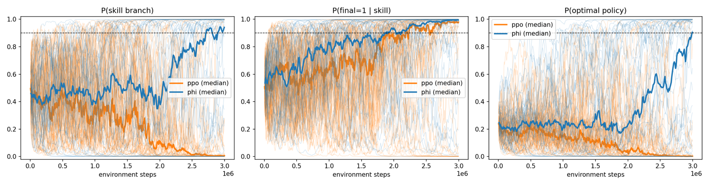

Reimplementing Counterfactual Shapley Credit Assignment
A reimplementation of the SkillLuck experiment from Li, Lee and Bareinboim's Counterfactual Shapley Credit Assignment paper, building the counterfactual rollout and Shapley estimator, finding a bias in the antithetic sampling, and comparing φ-PPO against PPO over 50 seeds.
This is long, and not meant to be read straight through. The theory is introduced where the implementation needs it, so the sections are roughly in build order: the environment and what credit should mean, then the counterfactual rollout and the Shapley estimator. The two results I would point a reader at are the antithetic sampling bias, where an exact oracle at a small horizon caught an error that more samples could never have fixed, and reconciling with the paper, which separates what reproduced from what did not.
The environment
SkillLuck is deliberately simple. The dynamics are not what make the task difficult; the challenge is that the reward does not tell you very much about which actions caused it.
At the first timestep the agent selects a branch: action 0 → Skill, action 1 → Luck. On the Skill branch it faces one consequential decision at $t = T-1$ (index 98 in my zero-based implementation), where action 1 yields reward 1 and action 0 yields 0. On the Luck branch the reward is drawn from $\mathrm{Bern}(0.5)\cdot\gamma^{T-3}$ at step 2, regardless of any subsequent action; the $\gamma^{T-3}$ scaling equalizes the two branches' return magnitudes. The remaining 98 timesteps are inert. Every step adds i.i.d. Gaussian reward noise $\mathcal{N}(0, \sigma^2)$.
I used $T = 100$, $\gamma = 0.999$, $\sigma = 3$. The optimal policy takes Skill and then action 1, for an expected discounted return of $\gamma^{98} \approx 0.9066$; Luck is worth $0.5\gamma^{98} \approx 0.4533$.
Two properties of the environment are especially important for everything that follows.
The causal structure is sparse and branch-dependent. On the Skill branch exactly two actions are causal: $x_1$, which selects the branch, and $x_{T-1}$, which determines the reward. On the Luck branch there is exactly one: $x_1$. Everything after the branch choice on Luck is causally inert — the reward was already fixed by an exogenous coin flip. A correct attribution has to say so, and saying so is not something a method can fake, because the two branches are behaviourally identical apart from where the reward comes from.
The signal is buried. At $\sigma = 3$ the discounted noise has standard deviation
$$\sigma\sqrt{\sum_{t=1}^{T}\gamma^{2(t-1)}} \approx 28.57$$
against a signal of 0.9066 — a per-episode signal-to-noise ratio of about 0.0317. Only two decisions are relevant, but the return is dominated by the noise. That is the setting in which a credit-assignment method has to recover a very small causal signal.
These correspond to two of the settings the paper is trying to address. When only a small number of actions are causal, credit assigned to the remaining actions contributes variance without useful signal. And when the environment is stochastic, comparing separate trajectories mixes the effect of changing the action with the effect of drawing different environmental noise. The paper argues that the counterfactual construction addresses both. Delayed reward is the third setting, which I return to near the end.
SkillLuck combines both of those difficulties, which is why it is a useful place to start.
What exactly should the credit measure?
Before writing the estimator, I wanted to be clear about what the attribution was supposed to represent. SkillLuck is useful here because the failure mode of ordinary temporal credit assignment is easy to construct explicitly.
Under the discounted return, the final action on the Luck branch is credited with essentially the whole reward — it happened immediately before the payout — despite having no effect on it whatsoever. Meanwhile the branch choice at $t = 1$, which determined everything, is credited at $\gamma^{98}$. The method is not making a small error in magnitude; it is crediting the wrong action. As the paper puts it, we credit studying hard for a good grade, not turning the paper over to look at it.
The paper states four criteria that a credit assignment function should satisfy instead:
| Criterion | Requirement | |
|---|---|---|
| D1 | Causal Admissibility | Actions that are not causes receive zero credit |
| D2 | Causal Power | Actions that cause the reward receive non-zero credit |
| D3 | Causal Normality | Acting against a more probable baseline earns more credit |
| D4 | Causal Effect Scaling | Larger causal effect earns proportionally more credit |
D1 and D2 together make the assignment necessary and sufficient — credit goes to an action if and only if it caused the outcome. D3 and D4 constrain the magnitude. Translated to SkillLuck, D1 says $\phi_{99} = 0$ on the Luck branch and D4 says $\phi_1$ should be larger on Skill than on Luck. These are the two predictions I later tested directly, and they are what the paper's Figure 1 uses to separate its method from eight prior ones — none of which passes both.
The desiderata, the natural total effect, and counterfactual Shapley values are not introduced by this paper. They come from Lee, Plečko and Bareinboim's framework for causal explanation [2], which develops them for attributing a model's prediction to its input variables. Counterfactual Shapley Credit Assignment carries that machinery into reinforcement learning by taking the players to be the actions of a trajectory and the outcome to be the discounted return. One detail to note when reading both: the numbering of the last two desiderata is swapped. The framework paper lists D3 as effect scaling and D4 as normality; the RL paper uses the reverse, which is the order given above.
Counterfactual, in the causal sense
Getting D1 requires knowing what an action caused, which requires a counterfactual. A terminological point matters here, because "counterfactual" already appears in this literature meaning something else.
The paper works inside a structural causal model $\mathcal{M} = \langle \mathbf{V}, \mathbf{U}, \mathcal{F}, P(\mathbf{U}) \rangle$ — endogenous variables, exogenous noise, and structural equations $V_i = f_i(\mathrm{Pa}_i, U_i)$. An MDP becomes an SCM by writing $S_{t+1} = f_S(S_t, X_t, U_{S_{t+1}})$, $X_t = \pi(S_t, U_{X_t})$, $Y_t = r(S_t, X_t, U_{Y_t})$. The counterfactual $V_x(u)$ is the value $V$ takes when $X$ is set to $x$ while the exogenous draw $u$ is held at its observed value.
The distinction matters because several earlier credit-assignment methods use “counterfactual” in a different sense. They condition on the observed outcome and ask which actions are more likely given that outcome. That is a statement about a conditional distribution; it is not the same as intervening on an action and constructing the resulting world. On SkillLuck, the distinction is particularly clear: an observed reward does not tell us whether it came from the agent's final action or from the Bernoulli variable on the luck branch. A counterfactual rollout can hold the Bernoulli draw fixed and change the action, which directly tests whether the action mattered.
In implementation terms, this means the counterfactual is generated by replaying the episode with the same noise realization and different actions — which is also what makes the variance reduction of Proposition 3.10 available, since the shared noise cancels in the difference.
The coalition value
Shapley values need a cooperative game: players, and a value function on subsets of them. The players are the actions $X_1, \dots, X_T$. The value of a coalition is the counterfactual natural total effect:
$$f(\mathbf{Z}) = \mathrm{NTE}(\mathbf{Z}, Y \mid \tau) = \mathbb{E}\big[\, Y(u) - Y_{\mathbf{Z}(u')}(u) \,\big]$$
Read as: how much worse would the return have been had the actions in $\mathbf{Z}$ been replaced by baseline alternatives, in this specific episode? "Natural" indicates the exogenous variables come from the posterior $P(\mathbf{U} \mid \tau)$ rather than the prior — the counterfactual world is required to be consistent with what was actually observed.
Conditioning on the observed trajectory collapses this to the form I implemented:
$$f(z) = Y - Y^{\sigma_z}$$
the observed return minus the counterfactual return under intervention $\sigma_z$, for a binary coalition mask $z \in \{0,1\}^T$.
Building the counterfactual rollout
The paper specifies $\sigma_z$ in its Equation 7, and it has three cases:
$$\sigma_z(t) = \begin{cases} x_t & z_t = 0,\ s^z_t = s_t \\ x \sim \pi(\cdot \mid s^z_t) & z_t = 0,\ s^z_t \ne s_t \\ x \sim \pi_{\text{base}}(\cdot \mid s^z_t) & z_t = 1 \end{cases}$$
which in code is almost a transcription:
if z[t] == 1:
action = baseline_policy(state)
elif state == factual_state[t]:
action = factual_action[t]
else:
action = current_policy(state)
The third case is the one worth pausing on. Once an intervention pushes the trajectory off its original path, the factual actions can no longer be replayed — they were conditioned on states that no longer obtain. From that point the current policy has to act. The first case, reusing the observed action when the counterfactual state matches, is licensed by the paper's Assumption 3.3 (exogenous noise independent across steps), and the paper notes this constrains only the SCM representation, not the MDP, since any MDP admits such a representation.
The choice of $\pi_{\text{base}}$ determines which question is being asked. A uniform baseline measures contribution relative to random behaviour; a fixed reference policy measures improvement over it; the self-baseline $\pi_{\text{base}} = \pi$ asks whether the specific action taken mattered relative to what this same policy usually does. The paper uses the self-baseline throughout training, so I did too — a choice with a consequence at convergence that I return to much later.
Common random numbers are not an optimization
The single most important implementation detail in this function is that both rollouts consume the same exogenous variables — in my case the same U_luck and U_noise arrays.
If the counterfactual draws fresh noise, then $Y - Y^z$ contains the causal effect of the action change plus a fresh draw of environmental randomness. At an SNR of 0.03, the second term does not merely add variance; it is thirty times larger than the quantity being measured. Common random numbers are what make $f(z)$ estimable at all here, and this is Proposition 3.10 made concrete: the variance reduction is proportional to $1 - \rho_Y$, where $\rho_Y$ is the correlation between factual and counterfactual returns under shared randomness. In SkillLuck, where the noise is shared and most coalitions leave the trajectory on-track, $\rho_Y$ is close to 1.
From counterfactual effects to Shapley credit
At this point I could evaluate $f(z)$ for any subset. What I needed was $T$ per-timestep numbers, which is what the Shapley value provides — the unique allocation satisfying efficiency, symmetry, and the null-player axiom:
$$\phi_t = \sum_{Z \subseteq \mathbf{X} \setminus \{X_t\}} \frac{|Z|!\,(T - |Z| - 1)!}{T!}\big[f(Z \cup \{X_t\}) - f(Z)\big]$$
The null-player axiom is not incidental machinery here — it is D1. An action with no causal effect on the outcome is a null player and receives exactly zero, by construction rather than by estimation. That is the formal reason to expect $\phi_{99} = 0$ on the Luck branch, and it is why an estimator that fails to deliver zero there is not merely imprecise but broken in a specific, diagnosable way. I leaned on this later.
Written as a sum over $T!$ permutations, this is computationally useless. Sampling permutations and averaging marginal contributions works as a reference implementation at small $T$ and I built one, but the cost is prohibitive: each $\phi_t$ needs its own samples, giving $O(T^2 M)$.
The kernel formulation is what makes the method tractable, and it is the paper's central efficiency claim:
$$\phi_t = \sum_{z \in \{0,1\}^T} \kappa_t(z)\, f(z), \qquad \kappa_t(z) = \begin{cases} \dfrac{1}{T\binom{T-1}{|z|-1}} & z_t = 1 \\[2ex] -\dfrac{1}{T\binom{T-1}{|z|}} & z_t = 0 \end{cases}$$
The sum is now over $2^T$ coalitions rather than $T!$ permutations, which sounds like no improvement — but the structure has changed in a way that matters. A single coalition evaluation contributes to all $T$ attributions at once, through different weights $\kappa_t(z)$. One counterfactual rollout, $T$ updated estimates. The cost drops to $O(TM)$, amortized $O(1)$ per action, and this is what makes $M = 1$ coalition sample per trajectory a viable training configuration.
Choosing the proposal distribution
$2^{100}$ coalitions cannot be enumerated, so they are sampled, and the estimator is
$$\hat\phi_t = \frac{1}{M}\sum_{m=1}^{M} \frac{\kappa_t(z^{(m)})}{Q(z^{(m)})} f(z^{(m)})$$
The interesting question is what $Q$ should be, and the answer is emphatically not uniform. The kernel weights $|\kappa_t|$ are largest at extreme coalition sizes — $k \approx 1$ or $k \approx T-1$ — and those sizes have probability $O(2^{-T})$ under uniform sampling. Uniform coalition sampling gives variance exponential in $T$.
The paper's Theorem 4.2 derives the variance-minimizing proposal. It factors into a distribution over coalition sizes, then a uniform choice among masks of that size:
$$c_k = \frac{1}{T}\left(\frac{1}{k} + \frac{1}{T-k}\right) \ \ (1 \le k < T), \qquad c_T = \frac{1}{T^2}, \qquad q^*_k \propto \sqrt{c_k}, \qquad Q^*(z) = \frac{q^*_k}{\binom{T}{k}}$$
This concentrates samples where the kernel weights are large and achieves an $O(1)$ second moment. The empty coalition is never sampled, since $f(\emptyset) = 0$ deterministically.
The empty coalition is not sampled because its value is zero. That detail later became relevant to the antithetic estimator.
The antithetic sampling problem
On top of common random numbers, the paper applies a second variance reduction: antithetic sampling. Each sampled coalition $z$ is paired with its complement $1 - z$, and both are evaluated.
My first implementation treated the two members of the pair as though both had been sampled from $Q^*$ and weighted them accordingly:
kappa(z) / Q*(z)
kappa(1-z) / Q*(1-z)
The problem is that the second coalition was constructed from the first rather than sampled independently. $Q^*$ is a distribution over coalition sizes, and complementation maps size $k$ to size $T - k$. For most $k$ the proposal happens to be symmetric enough that the error is invisible. The exception is the endpoint: $Q^*$ assigns positive probability to the full coalition $k = T$, but never samples the empty coalition $k = 0$. So
$$Q^*(|z| = T) > 0, \qquad Q^*(|1-z| = 0) = 0$$
When I sample the full coalition and manufacture its complement, that complement was not drawn from $Q^*$ at all. Weighting it as though it were introduces bias — not noise.
For SkillLuck this matters because the endpoint is not a negligible part of the estimator. I enumerated all $2^6 = 64$ coalitions at a reduced horizon and measured where the $|\kappa(z) f(z)|$ mass actually sits: 100% of it is at $k = T$. The antithetic half of every pair was silently discarding the entire signal.
A second, smaller bug had been hiding the asymmetry from me. My coalition_probability returned q[-1] for the empty coalition through Python's negative indexing, so $k = 0$ silently received $q_T$ instead of zero. Numerically harmless, since $f(\emptyset) = 0$ — but it meant the code never raised the division-by-zero that would have pointed straight at the problem.
The fix is to recognize which distribution the pair is actually drawn from. Once both members are used, the effective density is the mixture
$$Q_{\text{mix}}(z) = \tfrac{1}{2}\big[Q^*(z) + Q^*(1-z)\big]$$
def coalition_mixture_probability(z):
return 0.5 * (coalition_probability(z) + coalition_probability(1 - z))
def coalition_probability(z):
k = int(z.sum())
if k == 0:
return 0.0
return q[k - 1] / math.comb(len(z), k)
The important point is that constructing the complement changes the sampling distribution. The importance weight therefore has to account for both members of the pair.
One wording distinction matters. This was a bug in my implementation. The paper states that it uses antithetic sampling and cites Covert & Lee, but does not spell out the denominator used for the paired sample. Turning an omission in the exposition into a claim that the paper's estimator is wrong would not be fair, and I have asked the authors to confirm how they handled the weighting.
The oracle that caught it
At $T = 6$ there are only 64 coalitions, so an exact Shapley oracle is cheap enough that there is no reason not to build one. I enumerated every coalition, estimated its value over 300 rollouts, computed φ directly from the marginal-contribution definition, and independently checked that against the kernel identity.
exact φ : [ 0.2462, -0.0030, -0.0033, 0.0028, 0.0004, 0.0010]
no antithetic : [ 0.2522, 0.0017, 0.0052, 0.0015, 0.0018, 0.0042]
antithetic, Q* weighting : [ 0.2289, -0.0209, -0.0206, -0.0215, -0.0239, -0.0141]
antithetic, Q_mix : [ 0.2539, -0.0008, 0.0047, -0.0015, -0.0011, 0.0050]
(all at $M = 20{,}000$)
Two symptoms, both diagnostic. The causal coordinate is shrunk, and every non-causal coordinate converges to a constant $\approx -0.02$ instead of zero. That constant offset is D1 failing — and D1, as established above, is the null-player axiom, which is the property the entire construction rests on. A method whose whole claim is that non-causes get zero was reliably giving them $-0.02$.
The decisive observation is the third row's stability. The run had already converged in the Monte Carlo sense; increasing $M$ would not have rescued it, because the problem was bias. Note also that the naive non-antithetic estimator was already correct — the variance reduction was the only thing that broke it.
The small oracle gives a reference value against which the estimator can be tested directly, rather than inferred from training behaviour.
Using φ as a learning signal
With a working $\hat\phi$, the question becomes what to do with it. The paper's answer is to treat the attributions as a replacement reward function, leaving the dynamics untouched:
$$r^\phi_\pi(s, x) = \mathbb{E}_{\tau \sim \pi}[\phi_t \mid S_t = s, X_t = x]$$
Two results make this legitimate as a drop-in replacement rather than reward shaping with extra steps. Lemma 3.5 (gradient equivalence) shows $\mathbb{E}_\pi[\sum_t \phi_t \nabla \log \pi_t] = \mathbb{E}_\pi[Y \sum_t \nabla \log \pi_t]$ — a policy gradient method receives the same update direction in expectation under either reward. Theorem 3.7 then gives optimal policy equivalence: $\arg\max_\theta \mathbb{E}_{\pi_\theta}[\sum_t \phi_t] = \arg\max_\theta \mathbb{E}_{\pi_\theta}[Y]$.
This is what makes the construction useful for learning rather than only for explanation. The target objective is unchanged in expectation; the intended benefit is that the per-step learning signal contains more information about which actions mattered. That is the property SkillLuck is designed to test.
Three consequences of this are implementation constraints, and all three are easy to get wrong.
The φ-MDP is undiscounted. $\gamma_\phi = 1$. The outcome $Y = \sum_t \gamma^{t-1} r_t$ from which φ is computed already contains the discounting; applying $\gamma$ again to the φ-rewards would double-discount. By Shapley efficiency, $\sum_t \phi_t = Y - Y^{\mathbf{1}}$. My φ returns and φ-GAE are therefore computed at $\gamma = 1$ while the environment still runs at 0.999.
Advantages are normalized by standard deviation only, never z-scored.
adv = adv / adv.std().clamp(min=1e-8)
Subtracting the mean would shift $\phi = 0$ away from zero and destroy its meaning as the no-effect reference point — undoing D1 at the last possible moment, after all the work done to obtain it. The PPO baseline uses ordinary mean-centred normalization; the φ arm cannot.
There is a bias–variance dial I did not turn. The basic estimator needs a full counterfactual rollout per coalition; the paper's λ-bootstrapping replaces the tail with a learned value function via a TD(λ) return, with bias bounded by $\frac{2\gamma(1-\lambda)}{1-\gamma\lambda}\|V - V_\pi\|_\infty$ (Theorem 4.4). At $\lambda = 1$ the estimator is pure Monte Carlo and unbiased, which is what Table 3 reports for the experiments, so that is what I implemented.
The remaining component of the full method is Prioritized Trajectory Replay, which samples subtrajectories in proportion to causal importance $|\phi|$ — as opposed to PER, which prioritizes individual transitions by TD error. I did not implement it. The paper's Combinatorial Lock ablation finds both components necessary there, and PTR's absence is the largest known structural difference between my setup and the paper's; it comes back in the final comparison.
Validating the pieces against each other
Before trusting any training curve I ran three checks, each designed so that a specific class of error could not pass it.
The vectorized estimator against the reference implementation. At $T = 10$, $M = 40{,}000$, the two differed by at most 0.005 in any coordinate — confirming the speedup was an implementation change and not a mathematical one.
The fast simulator against the environment. I compared 3,000 episodes from the original environment against the tabulated simulator, with the reward noise turned off:
mean std
slow +0.4702 0.4530
fast +0.4672 0.4531
with $\mathrm{SE(diff)} = 0.0117$ — the observed difference is a quarter of one standard error.
My first attempt ran this at $\sigma = 3$ and was nearly worthless: with a return noise standard deviation of 28.57, $\mathrm{SE(diff)} \approx 0.74$, so the entire quantity of interest was about one standard error wide. It would have passed with badly broken branch logic. Turning the noise off made the test roughly 60× sharper, which suggests a rule I would now apply by default: turn the noise off to test correctness, and turn it back on to test the claim.
The credit profile against the causal structure. This is the check that directly tests the causal claims behind D1 and D2. Using $M = 300$ samples per trajectory and averaging absolute attributions over branch-matched trajectories:
Relative to the floor: on Skill, the first action is 5.2× and the final action 8.4×; on Luck, the first action is 8.1× and the final action 0.9× — indistinguishable from the 98 inert timesteps.
The final-action result on the Luck branch is the clearest test of D1. The estimator is never told which branch it is on, and nothing in the pipeline distinguishes step 98 on Skill from step 98 on Luck except the counterfactual itself: intervening there changes the return on one branch and not the other. The difference comes from the counterfactual intervention itself rather than from a branch-specific rule in the implementation.
Two methodological notes, because my first version of this diagnostic looked like an outright failure. φ is signed — a good factual action gives positive attribution, a harmful one negative, and at a near-random policy these cancel exactly in the mean. And pooling the branches mixes a population where step 98 is causal with one where it is not. Averaging signed φ over pooled trajectories destroys the signal completely, which is precisely what my first printout showed. Absolute values, split by branch.
A third note: do not use "fraction of total mass on causal steps" as the metric. With 98 inert steps, even a small per-step residual sums to more than two causal steps can, so the fraction is low regardless of how well the method works. Use the per-step ratio against the floor — and note the floor here is residual $M = 300$ estimator variance, not bias, so it shrinks as $M$ grows.
A control for reward densification
There is an obvious skeptical reading of any result from this method: dense rewards help optimization on their own, so perhaps replacing a sparse reward with any per-step signal would do as well. If so, the causal structure of φ is decorative and Theorem 3.7 is doing no work.
The control is straightforward. I permuted each φ vector before handing it to the policy — identical magnitudes, identical sum, identical variance, temporal alignment destroyed — and separately tested a uniform redistribution of the same total. On five seeds that all converge under the real signal:
real φ 5/5 converge
shuffled 0/5 converge
uniform 1/5 converge
This control makes it difficult to explain the result by reward densification alone: the same φ values are still present, but moving them to different timesteps removes the learning effect.
Making the experiment practical
The direct implementation makes an enormous number of very small neural network calls: per φ-episode, roughly 300 batch-1 forward passes across the factual rollout and two counterfactual rollouts, all inside Python loops.
The network is a $2 \to 64 \to 64 \to 2$ MLP, so this is not a matrix multiplication problem. Measured:
one 1-sample actor forward : 65.2 µs
one 512-sample forward : 388.9 µs
A 512× larger batch costs 6× the time. The cost is essentially all per-call overhead. A GPU does not help — kernel launch latency replaces Python and ATen dispatch latency at roughly the same magnitude, plus a device synchronization per step because the environment is NumPy. A TPU is worse: XLA wants static shapes, and this loop is dynamic and control-flow heavy.
The fix exploits a property of SkillLuck specifically. The policy only ever observes states of the form $(t, \text{branch})$ with $\text{branch} \in \{\text{none}, \text{skill}, \text{luck}\}$ — only $3(T+1)$ distinct inputs. So I evaluate the actor and critic on the entire grid once per iteration, producing tables of shape (101, 3), then run the environment and counterfactual simulator directly against those tables in NumPy.
This is exact, not an approximation: the policy is frozen within an iteration, so the table contains precisely the probabilities that iteration needs.
original φ episode : 42.27 ms
tabulated φ episode : 0.24 ms
speedup : 177.7×
Final runtime was 6.2 minutes per seed, putting 50 seeds per arm at about 5.2 hours.
One implementation detail is worth noting here. The tabulated path duplicates the environment's reward logic, and on my first attempt the branch codes were swapped. It produced entirely plausible returns and completely wrong φ. I now verify any such fast path with a reward reconstruction check against the environment — mine agrees to about $2.4 \times 10^{-7}$.
Matching the budget
φ-PPO pays extra simulation cost for its counterfactual credit, so the comparison has to be made on environment steps rather than episodes. With $M = 1$ and an antithetic pair, each training trajectory costs one factual rollout plus two counterfactual rollouts:
PPO → 100 environment steps per trajectory
φ-PPO → 300 environment steps per trajectory
I matched both arms at 3 million environment steps. With a batch of 32 trajectories that gives 937 iterations for PPO and 312 for φ-PPO. Plotting against episodes rather than environment steps would inflate the comparison by 3×.
This accounting does not quite match the paper's, which is worth flagging. Section 5 states that φ-PPO uses $(1+M)T$ steps per episode, and Appendix E.1 confirms "with $M = 1$, φ-PPO requires $2T$ steps per episode (one counterfactual rollout)." Under my accounting, antithetic pairing at $M = 1$ costs $3T$. Either the SkillLuck runs did not use the antithetic complement, or the complement rollout is not counted in the step budget. It is a factor of 1.5 in any step-matched comparison, so it is not negligible, and it is one of the questions I put to the authors.
Configuration
T = 100 batch = 32 trajectories
gamma = 0.999 epochs = 4
sigma = 3 M = 1
PPO clip = 0.2 lambda_phi = 0.95
actor LR = 3e-3 entropy = 0.01, annealed linearly to 0
critic LR = 1e-3 grad clip = 0.5
The convergence criterion follows the paper's: $P(\text{skill}) > 0.9$ and $P(\text{final} = 1 \mid \text{skill}) > 0.9$, sustained for 200 consecutive episodes. Operationally the notebook checks this over batched checkpoints, so at batch 32 the 200-episode window becomes a six-iteration window — 192 sampled episodes.
The 50-seed comparison
Seeds 0–49 for both arms, checkpointed per seed so that a Kaggle runtime failure would not destroy completed work.
converged : φ-PPO 28/50 PPO 13/50
One-sided Fisher exact p = 0.0021 (two-sided 0.0042). The rate difference is 0.300 with a 95% CI of [0.116, 0.484], a relative rate of 2.15×, and the per-arm Wilson intervals — φ-PPO (0.423, 0.688), PPO (0.159, 0.396) — do not overlap.

On why 50 seeds. An earlier 15-seed run gave 8/15 versus 4/15 at p = 0.132. That was not a negative result; it was an underpowered one. Simulating power at the observed effect size:
| seeds per arm | power |
|---|---|
| 15 | 0.30 |
| 30 | 0.57 |
| 50 | 0.82 |
| 100 | 0.98 |
At 15 seeds, a real effect of this size would have been missed 70% of the time. The 15-seed experiment was underpowered to distinguish the two conditions at the observed effect size, so I expanded it to 50 seeds.
On the shape of the distribution. The outcomes are bimodal, not centred:
| median | > 0.9 | < 0.1 | intermediate | |
|---|---|---|---|---|
| φ-PPO | 0.772 | 23 | 15 | 12 |
| PPO | 0.004 | 7 | 40 | 3 |
The mean curve ends around 0.58 and the median around 0.9, The mean and median therefore do not represent the behaviour of a typical run. Counts are the more informative summary here, and the curves are better read as illustration than as a single final number.
On transient convergence. The criterion counts 28 φ-PPO seeds, but only 23 finish above 0.9 on the joint quantity $P(\text{skill}) \times P(\text{final} = 1 \mid \text{skill})$. Some seeds satisfy the 200-episode window and then drift back out.
This is not a measurement artifact, and it follows directly from the self-baseline choice made back in the counterfactual rollout. Under $\pi_{\text{base}} = \pi$, the optimal φ-value is zero: once the policy matches its own baseline, intervening on it changes nothing, so the learning signal vanishes at exactly the point of success — while the entropy bonus keeps pushing the policy away from determinism. I suspect this is part of what PTR is for, though I have not implemented enough of the method to make that claim. Both numbers should be reported; they measure different things.
Reconciling with the paper
The paper's Figure 5 sweeps $\sigma \in \{0, 3, 10, 30, 100\}$ at $T = 100$, $\gamma = 0.999$, $M = 1$, 50 seeds per condition, with a budget of 3,000 episodes. At $\sigma = 0$ several baselines match or exceed φ-PPO, as expected — no noise, no variance problem, and $M = 1$ approximation noise costs φ-PPO slightly. At $\sigma = 3$ the ordering reverses: φ-PPO beats all baselines, PPO and REINFORCE both fail, and φ-PPO converges fastest among successful runs. That $\sigma = 3$ cell is what I set out to reproduce.
Matching the evaluation budget
My first comparison against the paper used a different evaluation budget, which accounts for the apparent disagreement.
The paper's budget is roughly 3,000 episodes. My experiment used 3 million environment steps per arm, which at $T = 100$ is 30,000 PPO episodes — an order of magnitude more. Seeing a few PPO seeds eventually converge, I initially thought I had found a discrepancy with a paper that reports PPO failing.
Restricted to the paper's 3,000-episode window, none of my PPO seeds converge. The discrepancy was entirely an artifact of my own accounting.
That said, over the full budget PPO converges on 13/50 seeds, CI [0.16, 0.40]. SkillLuck is presented as an environment that defeats standard credit assignment; in my hands it handicaps it severely but does not defeat it, given 10× the episodes. The most likely explanation is that my PPO baseline is simply stronger than the paper's — batch 32, 4 epochs, GAE $\lambda = 0.95$, entropy bonus, gradient clipping. I want to state this as my baseline may differ, not the paper overstates: both readings are consistent with the evidence and I cannot currently distinguish them.
The remaining gap
The substantive difference is on φ-PPO, and it runs the other way: my implementation is considerably less sample-efficient than the paper reports. Within the paper's 3,000-episode window, only a small fraction of my φ-PPO runs converge.
Several candidate explanations exist, and I would rather enumerate them than pick one.
PTR is absent. The paper's full method includes it and its own Combinatorial Lock ablation finds it necessary there. Mine has none. This is a concrete structural difference, though an ablation showing PTR matters on one benchmark does not by itself establish how much of the SkillLuck gap it explains.
The step accounting differs by 1.5×, as described above.
Hyperparameters do not cleanly map. Table 3 gives $B = 64$, $T_{\text{chunk}} = 128$, learning rate $\eta = 0.1$; I used $B = 32$, full 100-step episodes, and $3\times10^{-3}/1\times10^{-3}$ for actor and critic. The table is headed as covering φ-PPO and the Fork MDP experiments, so I am not confident which values apply to SkillLuck specifically — $\eta = 0.1$ in particular reads as a tabular setting rather than one for an MLP.
The discount is stated inconsistently. Section 5.1 and the Figure 5 caption both give $\gamma = 0.999$; Table 3 gives $\gamma = 0.99$. I used 0.999 on the strength of the experimental section. This is exactly the kind of ambiguity that can quietly redirect a reproduction, since $\gamma$ enters the return scale, the noise scale, and the sample complexity $M_{\delta,\epsilon} = \sigma^2/((1-\gamma)^2\delta\epsilon^2)$ simultaneously.
The antithetic weighting is unspecified, and given what it did to my estimator, the denominator used for the paired sample is not a detail.
I do not think the right move is to guess. The counterfactual credit mechanism reproduces and behaves as the theory predicts; the PPO comparison lines up once the budget is matched; the residual φ-PPO gap is a question about the training configuration, and I have asked rather than assumed.
Where the reproduction stands
| Component | Status |
|---|---|
| SkillLuck environment | ✓ |
| Counterfactual rollout (Eq. 7) | ✓ |
| Common random numbers | ✓ |
| Shapley kernel | ✓ |
| Coalition-size proposal $Q^*$ | ✓ |
| Antithetic estimator | ✓ after correcting the weighting |
| Exact small-$T$ Shapley oracle | ✓ |
| Reference vs. vectorized estimator | ✓ |
| Environment vs. fast simulator | ✓ |
| φ critic, φ GAE, terminal handling | ✓ |
| φ advantage normalization (std-only) | ✓ |
| Branch-conditional credit profile (D1/D2) | ✓ |
| Vanilla PPO baseline | ✓ |
| 50-seed comparison | ✓ |
| Prioritized Trajectory Replay | ✗ not implemented |
| Exact paper training configuration | ? unresolved |
The gap between the last two rows and the rest is the distinction I most want to keep clean. I am reasonably confident the core counterfactual Shapley machinery is reproduced and behaves as intended on SkillLuck. I am not confident that my simplified φ-PPO loop is the loop that produced the paper's sample-efficiency numbers. These are separate claims and are reported separately.
Checks worth keeping
Two of the errors in this reimplementation produced results that looked correct. The biased antithetic estimator returned a stable Monte Carlo estimate that had converged to the wrong value, and the first tabulated simulator produced plausible returns from inverted branch codes. Neither raised an exception, and neither was visible in a training curve. The checks below are what caught them.
Build the exact oracle at a small horizon. Enumerating $2^6$ coalitions is cheap and separates bias from variance immediately. Every estimator error here was found this way; none by reading the code.
Bias does not shrink with more samples. The $M = 20{,}000$ run looked converged and was wrong. When a Monte Carlo estimator disagrees with an oracle at large $M$, the disagreement is the diagnosis, not a reason to add samples.
Turn the noise off to test correctness. The $\sigma = 3$ sampler check had almost no statistical power and would have passed with broken branch logic. At $\sigma = 0$ it was 60× sharper and conclusive. Noise belongs in the test of the claim, not in the test of the implementation.
Signed quantities cancel. Averaging signed φ across a population containing both branches destroyed the signal and produced output that read as a failed reproduction. Absolute values, split by branch.
Identical results across two conditions mean the condition never changed. Two hyperparameter settings cannot produce identical RNG streams, so a bit-identical pair of runs is a fault in the experiment harness rather than a null result.
Next: Combinatorial Lock
The next target is the paper's other training benchmark, Combinatorial Lock. It is the same method on a second environment, so it continues this reproduction rather than starting a new one.
SkillLuck is close to a best case for the causal credit story: 2 causal timesteps out of 100, so the sparse-causality variance reduction $k'/T$ is at its most favourable, and the shared-noise cancellation is at its most valuable. Combinatorial Lock inverts the first of these — every action on the optimal path is causal, $k'/T = 1$, and the sparsity benefit vanishes entirely. What remains is the third axis I set aside at the beginning: delayed reward, and the claim (Proposition 3.11) that a counterfactual simulation reaches every timestep in one episode where TD(0) needs $O(T)$.
That makes it a sharper test than SkillLuck of whether I have understood the method or only one favourable configuration of it — and the paper's own results there show φ-PPO failing without PTR, which is the component I skipped.
So I plan to start deliberately small: reproduce the environment and inspect the branch-conditional φ credit profile before running any training sweep. If the localization I see in SkillLuck survives where the causal structure is dense rather than sparse, that says considerably more about φ than another successful PPO curve would.
A separate direction: counterfactual credit in preference-based reward learning
This is not a continuation of the reproduction. It is a different question, in a different problem setting, which the work above suggests a way into. It connects to a reimplementation of Soft-TAC I wrote up earlier, on preference-based reward learning, and it is at the stage of checking whether the idea is viable at all rather than of producing a result.
In the standard formulation [4], a preference between two trajectory segments is modelled over summed reward, so the scalar total is a sufficient statistic: two segments with the same sum are treated identically regardless of which timesteps produced it. That is the conflation SkillLuck is built around, moved into reward learning. The question I want to look at is whether the per-timestep credit vector is a more useful object of comparison than the return, and there is existing work on step-level explanations in preference learning [5] and on learned timestep weighting [6] to attach it to.
Shapley efficiency sets the constraint immediately. Since $\sum_t \phi_t = Y - Y^{\mathbf{1}}$, comparing totals recovers the return comparison and nothing more; any advantage has to come from the shape of the vector, and a preference label is one bit. This is early — currently at the stage of checking whether the credit vectors of two matched-return segments differ by more than estimator noise.
References
- M. Li, K.-Z. Lee, E. Bareinboim. Counterfactual Shapley Credit Assignment. Reinforcement Learning Journal, 2026. arXiv:2607.16999
- K.-Z. Lee, D. Plečko, E. Bareinboim. Improving Causal Explanations. Technical Report R-135, Causal AI Lab, Columbia University, May 2026. The origin of the four desiderata, the natural total effect, and counterfactual Shapley values. causalai.net/r135.pdf
- Muslimani et al. Towards Improving Reward Design in Reinforcement Learning, 2025 (openreview.net); and The Trajectory Alignment Coefficient in Two Acts, 2026 (arXiv:2601.16906). The TAC and Soft-TAC papers behind the earlier reimplementation.
- P. Christiano, J. Leike, T. Brown, M. Martic, S. Legg, D. Amodei. Deep Reinforcement Learning from Human Preferences. NeurIPS, 2017. arXiv:1706.03741
- J. Karalus. Tell Me Why: Training Preferences-Based RL with Human Preferences and Step-Level Explanations. Workshop on RL Beyond Rewards, RLC, 2024. arXiv:2405.14244
- C. Kim, J. Park, J. Shin, H. Lee, K. Lee, P. Abbeel. Preference Transformer: Modeling Human Preferences using Transformers for RL. ICLR, 2023. arXiv:2303.00957
- L. S. Shapley. A Value for n-Person Games. Contributions to the Theory of Games II, Princeton University Press, 1953. doi:10.1515/9781400881970-018
- S. Lundberg, S.-I. Lee. A Unified Approach to Interpreting Model Predictions. NeurIPS, 2017. The kernel formulation of Shapley values. arXiv:1705.07874
- I. Covert, S.-I. Lee. Improving KernelSHAP: Practical Shapley Value Estimation via Linear Regression. AISTATS, 2021. The antithetic sampling reference. arXiv:2012.01536
- J. Schulman, F. Wolski, P. Dhariwal, A. Radford, O. Klimov. Proximal Policy Optimization Algorithms, 2017. arXiv:1707.06347
Code and full experiment outputs: Kaggle notebook.
The implementation and experiments described here were run independently of the paper's authors. Unless otherwise stated, every numerical result in this post comes from the reimplementation and its saved experiment outputs. Descriptions of the paper's method and reported results are attributed to the corresponding section, theorem, or figure.